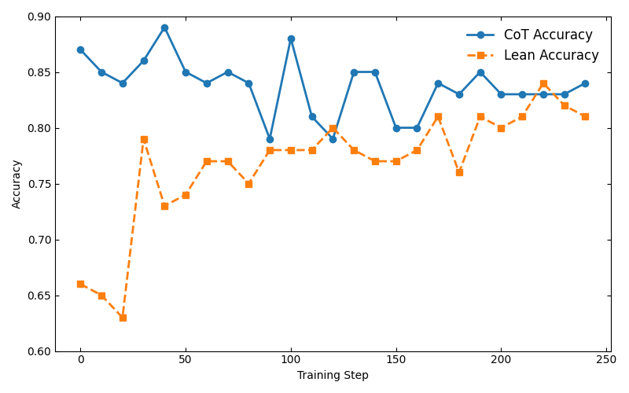

LLMs are fine-tuned to emit executable Lean 4 programs for arithmetic word problems, which are compiled and executed with Lean 4.27.0-rc1 for scoring.
Abstract
High accuracy on mathematical benchmarks does not establish whether reasoning remains reliable as problem complexity increases. We examine how executable symbolic representations change accuracy scaling in large language models compared with natural-language reasoning. To address this limitation, we introduce the GSM Arithmetic Benchmark (GSM-AB), a controlled benchmark that independently varies operand digit length and operation count to probe numerical scale and compositional complexity. We find that executable representations can improve accuracy and slow its decline as complexity increases. Lean reduces average sensitivity to operand digit length at every tested model size. By contrast, slower degradation with increasing operation count emerges at the larger model sizes. A Python program-of-thought (Python-PoT) control shows a similar operation-axis pattern, suggesting that this finding is not specific to Lean. These findings show that reasoning representation shapes arithmetic accuracy scaling and support executable symbolic representations for more reliable reasoning on complex arithmetic tasks.
Problem
High aggregate accuracy on math benchmarks does not show whether LLM arithmetic reasoning stays reliable as problems become more complex. It is unclear whether executable symbolic representations slow accuracy decline along numerical scale and compositional complexity separately.
Approach
GSM-AB is a 2,000-question benchmark that independently varies operand digit length (3–6) and operation count (2–6), using balanced expression trees rendered as GSM8K-style word problems. Separate LoRA adapters are trained on Qwen3-0.6B, 1.7B and 8B for natural-language chain-of-thought and for executable Lean programs. The Lean outputs are compiled and executed to obtain answers. Degradation slopes along each complexity axis are compared, and a Python program-of-thought control is included.
Results
Lean improves mean accuracy over CoT by 29.5, 44.1 and 47.8 points at 0.6B, 1.7B and 8B, and has flatter digit-length slopes at all sizes. Flatter operation-count slopes appear only at 1.7B and 8B. Python and Lean perform similarly at 8B.

Figure 4: Training dynamics of Qwen3-8B on GSM8K. Accuracy is evaluated across LoRA training checkpoints for CoT and Lean-symbolic supervision. CoT accuracy fluctuates without a clear monotonic gain, whereas Lean-symbolic accuracy increases substantially during training.
Model
ΔACC_avg
s(d) CoT
s(d) Lean
s(o) CoT
s(o) Lean
Qwen3-0.6B
+0.295
-0.041
-0.028
-0.194
-0.213
Qwen3-1.7B
+0.441
-0.039
-0.021
-0.169
-0.128
Qwen3-8B
+0.478
-0.071
+0.008
-0.114
-0.033
Lean-minus-CoT average accuracy and degradation slopes (digit axis d, non-floor operation axis o)